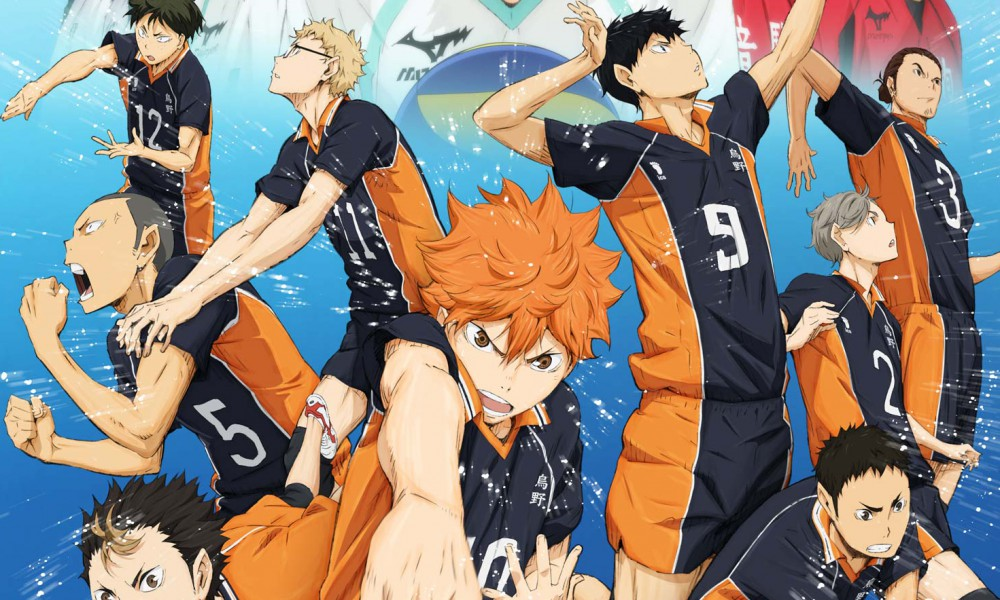

Selecta Visión ha anunciado en el FAN 2016 que Haikyuu! podría emitirse en abierto y a través de otras plataformas digitales, además de Movistar Plus. Aunque por el momento no han confirmado nada más, la primera temporada llegará pronto en formato físico, en edición sencilla y coleccionista.

El anime de Haikyû es una producción animada de Production I.G. que cuenta con dos temporadas. Se trata de la adaptación animada del manga deportivo de Haruichi Furudate. La historia sigue la carrera de Shoyo Hinata, que decide dedicarse al voleibol tras ver a los Pequeños Gigantes cuando todavía va a primaria. Pero en el último torneo en secundaria, su equipo recibe una auténtica paliza del equipo de Tobio Kageyama. Sin embargo, Hinata también se une al equipo de voleibol al entrar al instituto para así vengarse de Kageyama pero, para su sorpresa, Kageyama también está en el equipo. Así, dos antiguos rivales forman un equipo imbatible con el que buscan conseguir el campeonato nacional.